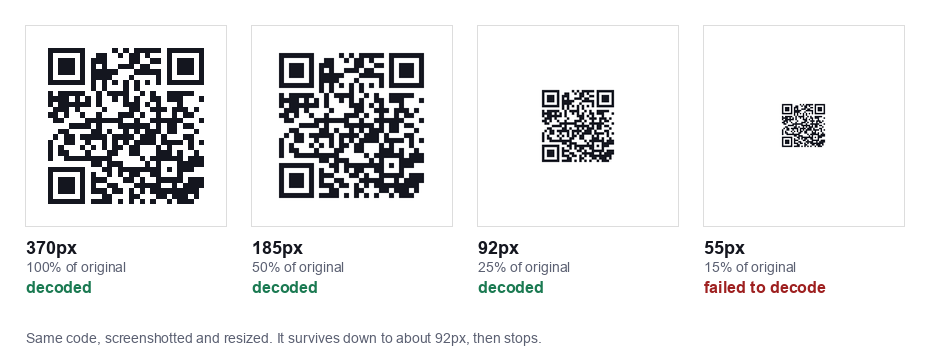

Someone sends you a QR code in a message. You cannot point your phone camera at your own screen, and there is no obvious button for it. This turns out to be one of the most searched QR questions there is, and the answer is different on every platform.
All of them work. None of them are where you would expect.
iPhone
The quickest way: Photos
- Open the screenshot in Photos.
- Press and hold on the QR code itself.
- A banner or menu appears with the link. Tap it.
This uses Live Text, which is on by default on recent iOS versions. If nothing happens, check Settings, General, Language and Region, Live Text is enabled.
If that fails: Live Text button
Open the image in Photos and look for the Live Text icon, a small square with lines inside it, usually bottom right. Tap it, then tap the code.
Third option: the Code Scanner
iOS has a dedicated Code Scanner in Control Centre. Add it under Settings, Control Centre. It scans from the camera rather than from an image, so for a screenshot on the same device you would need a second screen. Useful to know it exists, not the answer here.
Android
Google Lens, the reliable route
- Open the screenshot in Google Photos.
- Tap the Lens icon at the bottom.
- Lens reads the code and offers the link.
Lens is on essentially every modern Android device, either standalone or inside Google Photos and the Google app.
Straight from the screenshot notification
On many Android versions, taking a screenshot of a QR code shows a preview with a Lens or Scan shortcut right there. Tap it before the preview disappears.
Samsung devices
Samsung's Gallery has its own Bixby Vision or Lens option. Open the image, tap the three dot menu, and look for a scan or vision entry. Samsung also has a QR scanner in the quick settings panel.
Desktop and laptop
No built in scanner on Windows or macOS, so you have two practical options:
- Scan it with your phone. Put the code on your computer screen and point the phone camera at it. This works better than people expect, see the brightness note below.
- Use a browser based decoder. Upload the image file to a web tool that reads it. Pick one carefully, you are handing over whatever the code contains, which might be a WiFi password.
If the code is in a PDF or a document, take a screenshot of just the code first. A tighter crop decodes far more reliably than a full page.
What we found about image quality
We wanted to know what actually breaks a screenshot scan, so we generated a code, then shrank and compressed it and tried to decode each version.

Size is what matters. A 29 x 29 module code decoded fine at 370px, 277px, 185px, 129px and 92px. At 55px it stopped. That works out at roughly three pixels per module before detection breaks down.
Compression barely matters. We saved the same code as JPEG at qualities from 95 down to 5, taking the file from 35KB to 5KB. Every single one still decoded. That surprised us, JPEG artefacts are usually the first thing blamed when a code will not scan.
The practical rule: if a screenshot of a QR code will not scan, it is almost certainly too small, not too compressed. Ask for the image again at full size, or screenshot the code on its own rather than as part of a full page.
One caveat worth stating: this was software decoding of clean digital images. A phone camera pointed at a screen has to deal with reflections, focus and screen refresh, and is less forgiving than the decoder we used.
Scanning a code off another screen
If you are using a second device to scan a screen, three things make it work:
- Turn the screen brightness up. This helps more than anything else.
- Hold the phone square to the screen, not at an angle. Angles create reflections.
- Back off a little. Phone cameras struggle to focus very close. Fifteen to twenty centimetres usually beats five.
If it still fails, try zooming the image on the source screen so the code is physically larger.
When nothing works
The image is too small
Ask the sender for the original file rather than a forwarded copy. Messaging apps often downscale images, and a code that arrived through two apps may have been shrunk twice.
The code is partly covered
QR codes tolerate some damage through error correction, but the three large squares in the corners are position markers. If one of those is cropped or covered, detection usually fails completely rather than degrading gracefully.
It is a screenshot of a screenshot
Each round trip loses resolution. Two or three generations in, there may not be enough pixels per module left.
It scans but nothing useful happens
The code may hold plain text rather than a link, in which case the text is the whole content. Or it may be a WiFi code, which some image based scanners read but will not act on.
Before you tap what it opens
A screenshot of a QR code that arrived in a message deserves more suspicion than one printed on a menu. You did not choose the source, and codes sent by message are a common phishing route.
Read the URL preview before tapping. If the domain is not what you expected, or the page asks for a payment or a login you did not initiate, stop. Our guide on spotting a malicious QR code covers what to look for.
Making your own codes easier to scan
If you are the one sending codes, a few things help the person on the other end:
- Send the image at a decent size. Based on our test, anything under about 150px is asking for trouble once messaging apps have compressed it.
- Keep the data short. More characters means more modules means smaller modules at the same pixel size.
- Leave the white border intact. Cropping tight to the edge removes the quiet zone and breaks detection.
- Send it as a file rather than inline where the app allows, since that usually skips the compression step.
All of our generators produce codes at a size that survives this comfortably: WiFi, vCard, URL, text, email and SMS.
Common questions
Can you scan a QR code from a screenshot?
Yes. A screenshot contains the same encoded data as the original, so it decodes exactly the same way. You just cannot use the camera, you have to open the image and use Live Text on iPhone or Google Lens on Android.
Why will my screenshot not scan?
Almost always because the image is too small. We tested this: the same code decoded down to 92 pixels and failed at 55. Compression turned out not to matter, the code survived JPEG quality 5.
Can I scan a QR code from a PDF?
Yes, but crop a screenshot of just the code first. A full page screenshot leaves the code too small to decode.